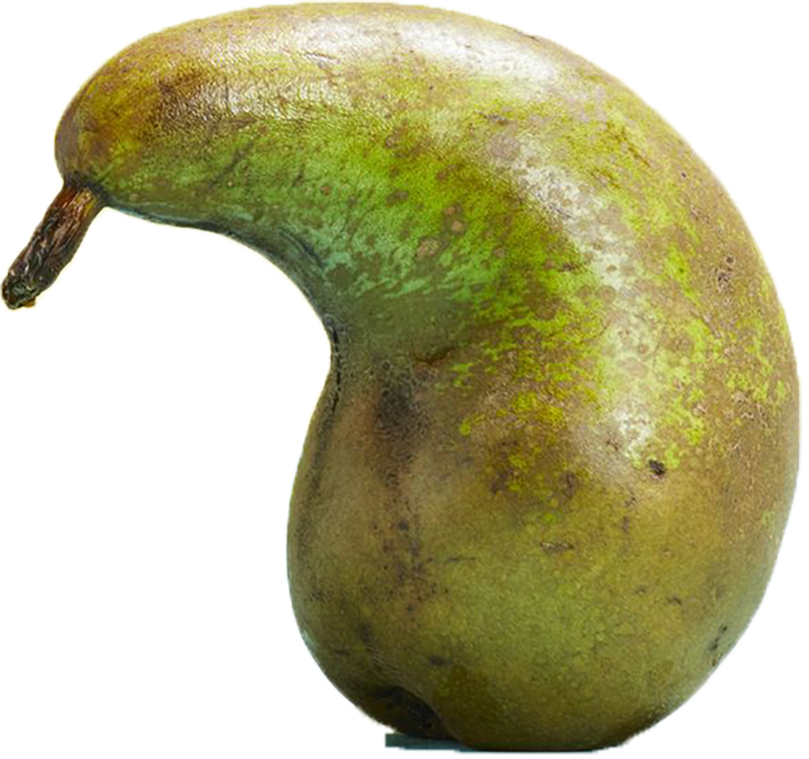
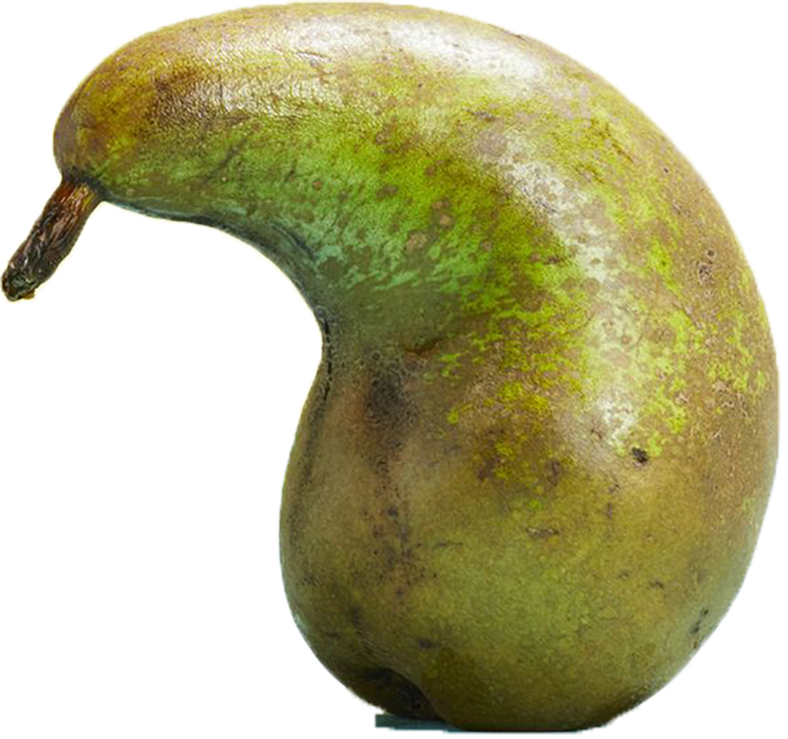

Gleaning is the act of collecting leftover crops in the field after harvest. During harvest, there is food that is left or missed often because it does not meet store standards for uniformity. In modern times, gleaning is used to provide fresh foods to those in need. "Dumpster diving", when done for food or culinary ingredients, is seen as a similar form of food recovery. Other than food, there are much more forms of gleaning.
(click anywhere)
 
